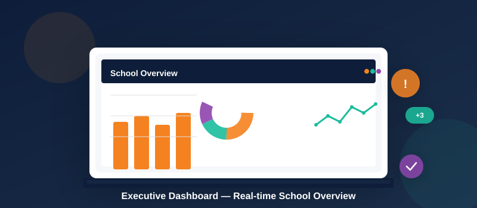

เพื่อการแจ้งเตือนแบบ Real Time Notification สำหรับผู้บริหาร

ยกระดับการตัดสินใจของผู้บริหารด้วยระบบที่รวบรวมข้อมูลจากทุกฝ่ายงานไว้ในที่เดียว — มองเห็นภาพรวมทั้งโรงเรียนแบบ Real-time ตั้งแต่จำนวนนักเรียน ผลการเรียน สถานะการเงิน แผนงาน ไปจนถึงพฤติกรรมนักเรียน ทำให้สามารถติดตามแผนปฏิบัติการและวิเคราะห์ความเสี่ยงได้ก่อนที่ปัญหาจะลุกลาม
ระบบพร้อมรองรับการวิเคราะห์ข้อมูลร่วมกับเทคโนโลยี AI ในอนาคต เพื่อให้การบริหารเชิงกลยุทธ์เท่าทันทุกการเปลี่ยนแปลง
ในอดีต เมื่อผู้บริหารต้องการรายงานสักฉบับ ต้องสั่งการให้ทีมงานรวบรวมข้อมูลจากหลายฝ่าย ประมวลผลด้วยมือ จัดรูปแบบ แล้วส่งกลับมา — กระบวนการที่ใช้เวลาเป็นวันหรือเป็นสัปดาห์ ซึ่งกว่าจะได้ข้อมูล สถานการณ์อาจเปลี่ยนไปแล้ว
SWIS Plus เปลี่ยนรูปแบบนี้ทั้งหมด — ผู้บริหารเรียกดูรายงานได้เองทันทีจากมือถือหรือคอมพิวเตอร์ ข้อมูลถูกประมวลผลจากฐานข้อมูลจริงแบบ Real-time ไม่ต้องรอใครทำให้ ไม่ต้องถามใคร ได้คำตอบที่ต้องการภายในไม่กี่วินาที และเมื่อเชื่อมกับพลังของ AI ยุคปัจจุบัน การวิเคราะห์เชิงลึกที่เคยต้องใช้ทีมงานทั้งฝ่าย จะอยู่แค่ปลายนิ้วของผู้บริหาร
แอปพลิเคชันสำหรับผู้บริหารที่รวบรวมข้อมูลสำคัญ การแจ้งเตือน และรายงานไว้ในที่เดียว เข้าถึงได้จากมือถือทุกที่ทุกเวลา
แจ้งเตือนสถานการณ์สำคัญทันทีที่เกิดขึ้นในโรงเรียน
ดูภาพรวมข้อมูลนักเรียน ครู การเงิน และกิจการต่างๆ
ส่งข้อความถึงบุคลากร นักเรียน หรือผู้ปกครองได้ทันที
ค้นหาข้อมูลและดูรายงานย้อนหลังได้ทุกเมื่อ
ทุกผลงานของครูและบุคลากรถูกบันทึกเข้าสู่ Digital Portfolio โดยอัตโนมัติ ตั้งแต่การสอน กิจกรรม โครงการ ไปจนถึงการอบรมพัฒนาตนเอง — ผู้บริหารสามารถเรียกดูผลงานของบุคลากรทุกคนได้ทันที ไม่ต้องรอให้ใครมาจัดทำรายงานให้
ใช้ประกอบการพิจารณาเลื่อนตำแหน่ง ประเมินผลงานประจำปี หรือวิเคราะห์ศักยภาพบุคลากรเชิงกลยุทธ์ได้อย่างมีข้อมูลรองรับ ขณะที่บุคลากรเองก็สามารถคัดเลือก จัดหมวด และตกแต่ง Portfolio ของตัวเองได้ภายหลัง
รองรับทั้ง iOS และ Android สแกน QR code ที่หน้า SWIS Applications
ไปที่หน้าดาวน์โหลด